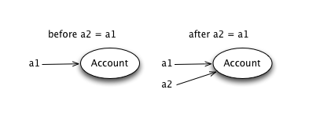

Part 1: Review
- Object literals: for packaging values
- JavaScript中的OO 是基于对象的编程
- 更加接近OO的本质，OO其实不需要类这个概念
- Slots can hold any value, including functions
- Closures: functions on out-of-scope variables
i18n
- i18n stands for internationalization
- "Factor out" choice of language
- Here's a tiny example using an object literal
- Can you modify it to speak French instead?
Answer: i18n
- Just switch the object assigned to g
- We're swapping one "module" for another
Function Slots
- Slots(槽位) can hold any kind of value, including functions
- 这里就是对象属性，slots是传统对象编程的术语
Slot machine
- Here's a function that returns an object
- On object-oriented settings, called a constructor
- 返回对象的函数被称为构造函数
- Can you change it to greet you by name instead?
Answer: Slot machine
- Just change the argument to Greeter
Counting closures
- Our old friend the counter, with an initial value
- Note update to i, which is out of scope when Counter returns
- Can you make it count backwards from 10?
Answer: Counting closures
- Here's the answer: subtract one in the closure instead
- Start at 11, since it subtracts before printing
Part 2: Objects and Methods
- Methods: slots holding functions
- Accessing an object via methods alone
- Encapsulation of state
Up and down
- An object with slots holding functions
- These functions are called methods
- 对象的属性如果是函数，称为方法
Banking
- Same idea, this time for a bank account
- Try and withdraw too much money and see what happens
Answer: Banking
- If you withdraw too much, prints "no" and doesn't reduce balance
Attacking the Bank
- Can a robber reduce the balance without a withdrawal?
- No way to set bal from outside; it's encapsulated
- 无法直接修改bal的值, 它是一个 封装值
An Aside: Secure Banking
- Can't modify balance, but can break the bank anyway
- To fix this, can call Object.freeze(a): try it!
- 调用Object.freeze(a)方法，冻结对象，防止修改
More: Secure Banking
- Here's the same code, with freeze
- In practice, call freeze inside the constructor
Part 3: Sharing and Aliasing
- When two variables point to one object
- 对象的共享与别名，两个变量指向同一对象
- Idea is often confusing to novices
- Unexpected sharing is often confusing to experts
Bank Accounts
- How many account objects are there?
- What happens to a2 when you deposit in a1?
Answer: Bank Accounts
- How many account objects are there? Two!
- What happens to a2 when you deposit in a1? Nothing!
Multiple Variables
- How many account objects are there?
- What happens to a2 when you deposit in a1?
Answer: Multiple Variables
- How many account objects are there? One!
- What happens to a2 when you deposit in a1? It changes too!
Aliasing 别名
- Variable a1 and a2 are aliases or aliased
- The account object is shared between a1and a2
- Assignment x = e: make x point to the value of e
- Results in two names for one object
Aliasing, Visually
- Look at the picture
- Think of variables as pointers, not slots
- After the assignment, the situation is symmetrical!

Part 4: Callbacks
- APIs: using objects through specs
- Callbacks: functions that an object calls
- Registration methods
A Traffic light API
- To use an object, you just need specifications of methods
- Called an API: application programmers' interface
- Specifications of traffic light methods:
- red: switch to red light
- yellow: switch to yellow light
- green: switch to green light
- next: switch to next light in sequence
- Can you turn the light to green?
- Can you cycle through the colors on each click of run?
Answer: A Traffic light API
- Easy: just use the green method, and click run
- Then replace code by t.next() and click run
Don't call me, I'll call you
- We've seen that functions can be passed as arguments
- Callback or listener: function passed as argument, called later
- Example: account that lets you choose how success is reported
Traffic Light in the Bank
- Let's hook the account up to the traffic light
- Recall that t.green if a function that turns t green
- Can you change the withdrawal amount so that a red light shows?
- Can you make it show yellow for a failed account operation?
Answer: Traffic Light in the Bank
- To show yellow for failed account operation, just pass t.yellow instead
On the Button
- Often want to choose the callback dynamically
- Common idiom: provide a registration method
- Our button object has method onclick(f) to register f for clicks
- Run the code, and click the button to see what happens
Answer: Controlling the Lights
- The call to onclick binds the function t.next to the button
- Now every time the button is clicked, the traffic light switches to next color
Exercise: Action & Reaction
- Build a reaction tester
- Should go green after random delay
- Then you click button, and it reports your reaction time
- Hint: now() returns current time in ms
Some Functions
- Functions for the next exercise
Exercise: Action & Reaction Trace
- This time, compute average over multiple tries
- Complete the code inside the function report
- Hint: use some of map, reduce, zip, filter and pos, plus, max